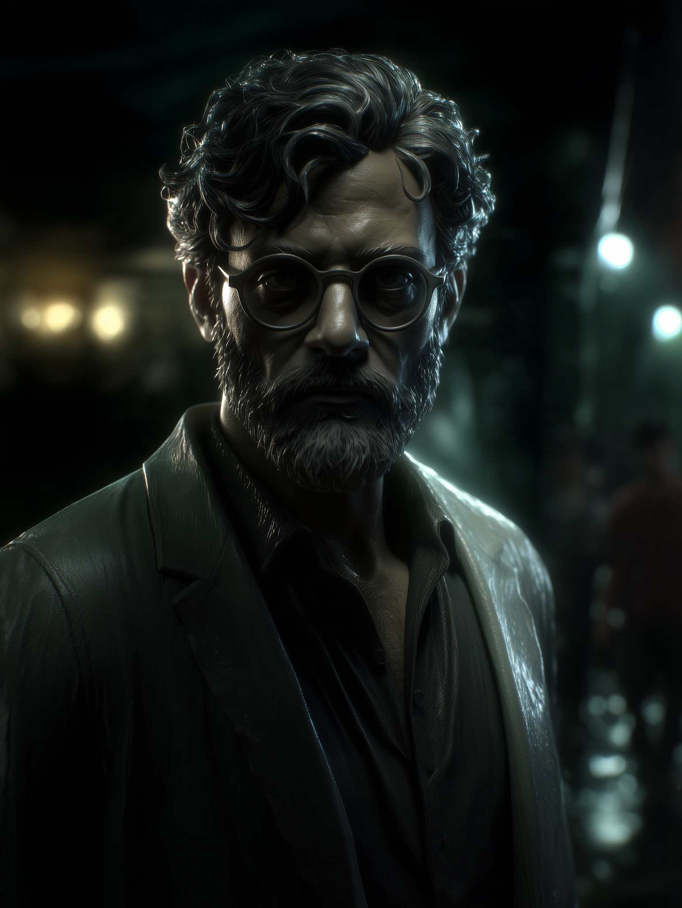

02 October 2026 · 02:42:36 AM IST · minimax_h3 · Unreviewed
Measured file: 2560 × 1440 · 24/1 fps · 8.000000 seconds
Download original outputUse this with only the intended character portrait uploaded: Use the attached image as the sole character reference. Preserve the character’s identity, facial features, hairstyle, beard, visible clothing, colors and defining details throughout the video. Extend the outfit beyond the portrait naturally and keep the completed design consistent across all angles. Create an eight-second character showcase that clearly presents two views: a complete front view and a complete back view. 0–2 seconds: Smoothly pull the camera back from the supplied portrait into a straight-on, full-body front view. Reveal the entire character from the top of the hair to the soles of the shoes, with comfortable space above the head and below the feet. 2–4 seconds: Hold the full-body front view with a stationary camera. The character faces directly forward, standing naturally upright with feet slightly apart and arms relaxed beside the body, allowing the outfit and silhouette to remain clearly visible. Keep movement limited to subtle breathing. 4–6 seconds: Move the camera in a smooth, controlled 180-degree orbit around the stationary character, passing through the side view and arriving directly behind him. Maintain the same camera height, distance and full-body framing throughout the orbit. The character remains facing the original direction and does not turn to follow the camera. 6–8 seconds: Stop the camera directly behind the character and hold a clear, straight-on, full-body back view. Show the complete rear silhouette, hairstyle, clothing and footwear. Maintain the same stance and character scale as the front view. Use a simple, unobtrusive background and steady lighting that makes the entire character clearly readable from both directions. Keep the character sharply focused, with minimal motion blur and minimal hair or clothing movement. Prioritize stable front and back frames suitable for a character sheet. No cropped feet, dramatic perspective, additional close-ups, props, text or changes of outfit.
{
"aspect_ratio": "auto",
"duration": 8,
"width": 2560,
"height": 1440,
"reference_elements": [],
"resolution": "2K",
"aigc_watermark": false,
"batch_size": 1
}
Attachment role: image · Download reference
11 September 2026 · 02:38:44 AM IST · seedance_2_5 · Unreviewed
Measured file: 1920 × 1080 · 24/1 fps · 4.041667 seconds
Download original outputThese two September attempts use the same uploaded video. Their order here is newest first; prompts differ. Neither has been rated as successful.
Edit @Video1 directly. Preserve every original shot, cut, camera movement, pose, contact and action timing. Apply the SAME WHITE WIREFRAME-ON-BLACK 3D MESH rendering to EVERY FRAME OF EVERY SHOT, including the middle low-angle action shot. Characters, faces, hair, clothing, hands, props, buildings and ground all have dense thin white polygon edge lines wrapping around their original surface forms, with dark opaque interiors that hide back-facing edges. Like a professional 3D modeling application's wireframe-on-solid viewport. The final shot of the grey-haired man on the ground must show dense white mesh lines following his face, glasses, fingers, coat folds and hair. The first confrontation and middle shot must use that identical wireframe treatment. No photographic textures or realistic materials remain anywhere. No grayscale photographic shots. No low-poly faceted solid shading: WHITE EDGE LINES on DARK SURFACES are the essential appearance. The mesh deforms with the original performance throughout. Keep the exact original video duration and original edit. No new shots, objects, UI, labels or captions. Return only the complete consistently wireframe-rendered video.
{
"aspect_ratio": "16:9",
"duration": 5,
"width": 1920,
"height": 1080,
"genre": "auto",
"resolution": "1080p",
"generate_audio": false,
"multi_shots": false,
"multi_shot_mode": "custom",
"multi_prompt": [],
"speedramp": "auto",
"reference_elements": [],
"prompt_language": "en",
"model": "video_edit",
"extension_mode": null,
"bitrate_mode": "high",
"draft": false,
"seed": null,
"draft_job_id": null
}Attachment role: video · Download reference
11 September 2026 · 02:34:39 AM IST · seedance_2_5 · Unreviewed
Measured file: 1920 × 1080 · 24/1 fps · 4.041667 seconds
Download original outputThese two September attempts use the same uploaded video. Their order here is newest first; prompts differ. Neither has been rated as successful.
[video editing] The target video is an edited version of @Video1. Convert the ENTIRE original video into a clean monochrome 3D polygon-mesh visualization. Preserve the source shot sequence, cut locations, camera movement, framing, perspective, character identities and proportions, facial expressions, body acting, hand trajectories, contacts, occlusions, clothing movement, background actions and exact action order. Follow the source video throughout; do not create a new scene or a new performance. Every visible character, hair mass, garment, prop, street surface and building becomes an opaque charcoal-black three-dimensional surface covered by fine crisp white topology lines. Dense coherent quad-dominant topology follows the curved surface forms, especially eyelids, lips, nose, cheeks, fingers, hair silhouette and clothing folds, like a professional animated wireframe-on-solid mesh viewport. Hidden edges are occluded by solid surfaces; no see-through x-ray geometry. Keep stable mesh spacing and surface-attached lines over time, deforming with the original motion rather than crawling or flickering. Remove all original photographic textures, skin colors, fabric prints, metallic reflections and colored lighting. Soft neutral grey shading under the white mesh should keep volume and silhouettes readable. The whole environment also uses this dark solid mesh treatment. Preserve the locations and timing of fire/effects as simplified monochrome contours without bright colored bloom. Full-frame video, no borders, captions, interface, labels, scans, holograms or added objects. The only intended change is the rendering medium from the original appearance to this animated polygon mesh pass.
{
"aspect_ratio": "16:9",
"duration": 5,
"width": 1920,
"height": 1080,
"genre": "auto",
"resolution": "1080p",
"generate_audio": false,
"multi_shots": false,
"multi_shot_mode": "custom",
"multi_prompt": [],
"speedramp": "auto",
"reference_elements": [],
"prompt_language": "en",
"model": "video_edit",
"extension_mode": null,
"bitrate_mode": "high",
"draft": false,
"seed": null,
"draft_job_id": null
}Attachment role: video · Download reference